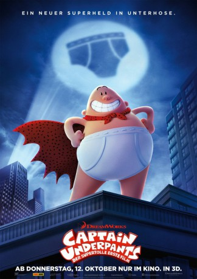

gesehen am 15.10.2017
gesehen am 15.10.2017Alternativ: Captain Underpants: The First Epic Movie gesehen am 15.10.2017
 
 IMDB-Wertung: 6.2 / 10
IMDB-Wertung: 6.2 / 10  Metascore:
Metascore: 
George Beard (Stimme im Original: Kevin Hart) und sein Schulkumpel Harold (Thomas Middleditch) sind zwei recht fantasiebegabte Viertklässler. Gemeinsam entwerfen sie den fiktiven und gedanklich etwas langsamen Superhelden Captain Underpants. Doch mit der fiktiven Existenz Captain Underpants' geben sich Harold und George bald nicht mehr zufrieden - sie wollen ihren begriffsstutzigen Weltenretter auch in der Realität auferstehen lassen. Da kommt der arrogante Schuldirektor Mr Krupp (Ed Helms) gerade recht. Kurzerhand wird der ungeliebte Lehrer hypnotisiert und zu Captain Underpants transformiert. Gemeinsam stürzen sich die drei in ein aufregendes Abenteuer, in dem sie mit dem verrückten Wissenschaftler Professor Poopypants (Nick Kroll), der Turbo-Toilette 2000 und der Petze Melvin Sneedly (Jordan Peele) konfrontiert werden.
Jahr: 2017
Dauer: 88 Minuten
FSK:
Land: USA Studio: 20th Century FoxTonspuren:
Untertitel: Deutsch, Englisch,
Auflösung: 1080p (1920x1036) Größe: 5703 MB
Genre: Action, Komödie, Animation/Trick, Familie
Regisseur: David Soren
Drehbuch: Nicholas Stoller
Soundtrack:
Darsteller:
 Kevin Hart als George
Kevin Hart als George Ed Helms als Captain Underpants / Mr. Krupp
Ed Helms als Captain Underpants / Mr. Krupp Nick Kroll als Professor Poopypants
Nick Kroll als Professor Poopypants Thomas Middleditch als Harold
Thomas Middleditch als Harold Jordan Peele als Melvin
Jordan Peele als Melvin Brian Posehn als Mr. Rected
Brian Posehn als Mr. Rected Mel Rodriguez als Mr. Fyde
Mel Rodriguez als Mr. Fyde Chris Miller als Nobel Audience Member
Chris Miller als Nobel Audience MemberDatei: X:\Kinder Filme (A-F)\Captain Underpants - Der supertolle erste Film (2017, FSK, 1920x1036).mkv seit 12.10.2017
Festplatte: Kinder-Filme+Trick
 Es gibt insgesamt 68 Filme in der Gruppe 'Kinder Filme (A-F)'
Es gibt insgesamt 68 Filme in der Gruppe 'Kinder Filme (A-F)'